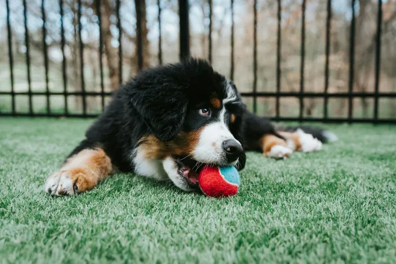

Juguetes seguros: lo que todo dueño debe saber.
Los juguetes son una herramienta fundamental para estimular la mente y el cuerpo de los perros, además de reforzar el vínculo con sus compañeros humanos. Sin embargo, no todos los juguetes son adecuados: los que son demasiado pequeños pueden tragarse y provocar asfixia, mientras que aquellos con piezas sueltas o de materiales frágiles pueden causar lesiones graves. Un ejemplo común son los juguetes hechos de huesos naturales , que al astillarse pueden dañar la boca o el estómago del animal.
"Un buen juguete entretiene a tu perro; un juguete seguro también protege su salud."
Tipos de juguetes recomendados
Existen muchas opciones para elegir según el tamaño y la personalidad de tu perro. Las pelotas de goma sólida o los frisbees de material suave son ideales para juegos de buscar y traer.Las cuerdas resistentes permiten juegos de tirar, siempre bajo supervisión. Para quienes disfrutan de morder, los juguetes de goma dura que se pueden rellenar con snacks ofrecen diversión y estimulación mental. También existen rompecabezas y dispensadores de comida que convierten la hora de jugar en un desafío enriquecedor.
Consejos prácticos para elegir y mantener los juguetes
Antes de comprar, revisa que el juguete sea del tamaño adecuado: demasiado grande no será atractivo, y demasiado pequeño puede ser peligroso. Prefiere materiales no tóxicos, sin bordes filosos ni piezas desprendibles. Revisa periódicamente el estado de cada juguete y reemplázalo en cuanto empiece a romperse. Una buena práctica es rotarlos cada par de semanas: así tu perro siempre tendrá algo “nuevo” que lo mantenga motivado y feliz.
Conclusiones clave
- Elige siempre juguetes del tamaño y material apropiado para tu perro.
- Evita juguetes que puedan romperse, astillarse o desprender piezas peligrosas.
- Varía los juguetes para mantener el interés, la seguridad y la estimulación mental de tu mascota.
¿Encuentras útil el artículo?
Compártelo con alguien más